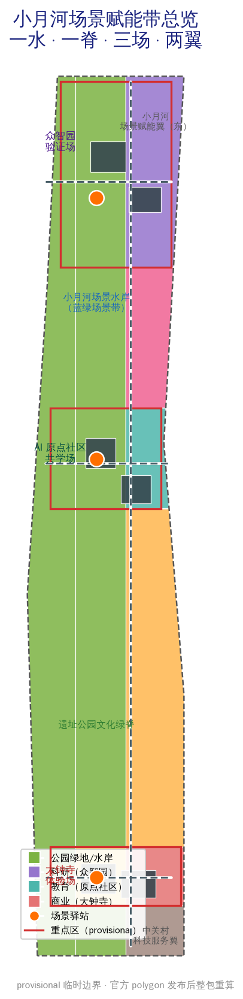
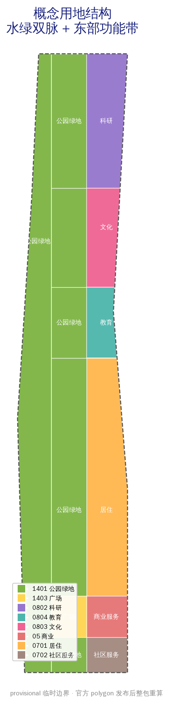
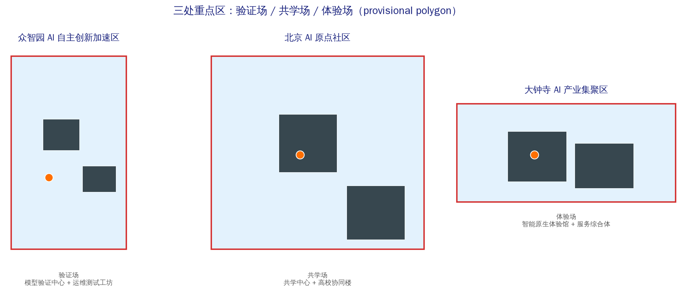
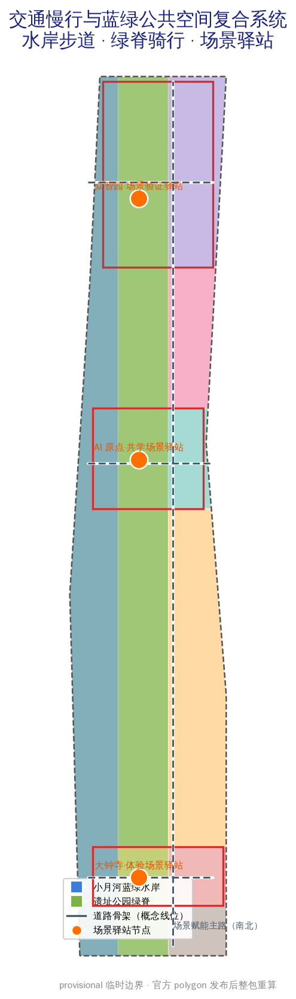
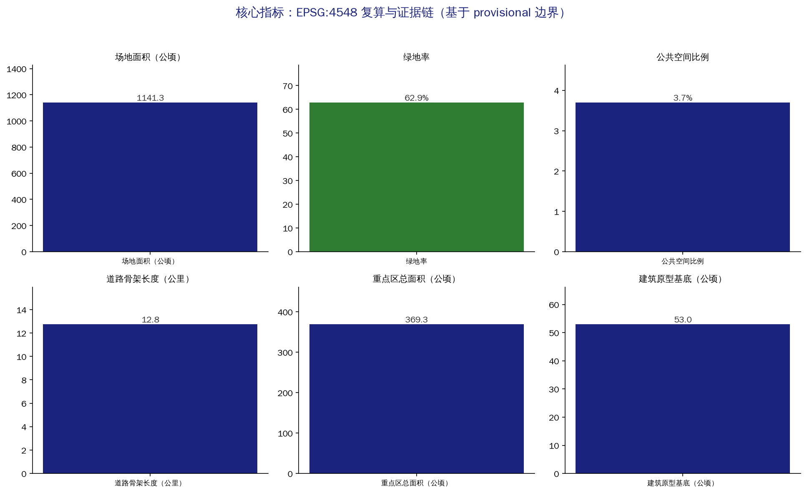

XIAOYUEHE SCENARIO WING / 小月河场景赋能带
Using the Xiaoyuehe blue-green water system as the scenario-enabling spine, this proposal turns AI scenarios from showcase exhibits into everyday civic infrastructure: a one-water one-ridge three-fields two-wings spatial framework, 12 operable scenario cards, 4 test/validation scenarios, 6 user personas and 3 AI pilgrimage landmarks, all generated on the provisional boundary with recalculation interfaces retained.
XIAOYUEHE SCENARIO WING / 小月河场景赋能带
Design Basis and Source Inventory
This proposal responds to the pre-qualification announcement of the Centennial Jing-Zhang AI Innovation Belt International Urban Design Open Call and the agent taskbook, focusing on the long-overlooked Xiaoyuehe Scenario-Enabling Wing in the official "three areas, two wings" structure. The design judgment: the competitive edge of the Jing-Zhang belt is not another science park, but whether AI scenarios can be taken out of showcase windows and placed into the everyday life along the Xiaoyuehe waterfront, making scenarios themselves testable, reversible, and auditable civic infrastructure 来源 来源 标准.
Spatial data is generated on the maintainer-registered provisional boundary: the overall design area of about 11.4 km² and three key areas (Zhongzhiyuan, Beijing AI Origin Community, Dazhongsi) totaling about 368.4 ha. All geometry is marked official_boundary=false, boundary_precision=provisional_rough; it is for generation, display and self-check only, not for official redlines, precise areas or statutory controls, and must be fully recalculated when official polygons are released 空间数据 [assumption:A-BOUNDARY-001].
Data use follows the four-tier source-registry policy: official announcements and standard snapshots define task boundaries; the planning-limits table registers known areas and missing controls; OSM serves only as conceptual basemap and display reference; the conceptual land use, building prototypes and scenario nodes generated here are design suggestions, not land supply, property or approval opinions 来源 来源.

Three-Level Scope Framework
The three levels follow the announcement: the coordinated research area of about 43.6 km² answers how the AI innovation ecosystem is organized along the Jing-Zhang corridor and the Xiaoyuehe water system; the overall design area of about 11.4 km² implements the spatial framework and renewal projects of the scenario wing; the key detailed-design area of about 368.4 ha shapes three key areas into three scenario prototypes—Zhongzhiyuan as the validation field, AI Origin Community as the co-learning field, and Dazhongsi as the experience field 指标 指标 指标.
The "one water, one ridge, three fields, two wings" structure works across all scales: one water is the Xiaoyuehe blue-green scenario waterfront (western water band, concept zone about 303 ha); one ridge is the Jing-Zhang heritage park cultural green spine (central continuous green belt, about 387 ha across south/mid/origin/zhongzhiyuan segments); three fields are the Zhongzhiyuan validation field, the Origin co-learning field, and the Dazhongsi experience field; two wings are the Zhongguancun technology-service wing (factor allocation) and the Xiaoyuehe scenario-enabling wing (scenario implementation). Waterfront and ridge form a "water-green dual vein" along which scenario nodes are distributed 空间数据 空间数据 深度.
Working method across levels: the research level decides "where the scenario belt goes" from industrial-chain and future-city judgments; the overall level decides "how the belt lands" through land-use zones, road skeleton and renewal projects; the key-area level decides "how a single scenario is built, tested, corrected and exited" through building prototypes, public space and scenario cards. Every conclusion maps to layers and metrics, avoiding floating visions 深度.

Coordinated Research Area: Industry and Future-City Study
Core judgment: scenarios are scarce infrastructure in the AI era. Haidian already has model, compute, talent and capital supply; whether AI applications turn into urban vitality depends on continuous, operable, reversible scenario space. The three positionings land as follows: the Centennial Jing-Zhang cultural belt unfolds along the green spine; the urban AI life-experience belt unfolds along the Xiaoyuehe waterfront; the AI integration innovation belt is carried by the three-fields two-wings industrial loop 来源 标准.
Naming and identity: "XIAOYUEHE SCENARIO WING / 小月河场景赋能带", logo concept "Scenario Ripple"—Xiaoyuehe water ripples intersecting the Jing-Zhang rail line in a loop: cyan for water scenarios, amber for railway memory, ink for the technology base. The identity does not cover heritage fabric and serves public wayfinding, scenario cards and event systems only 深度.
Global AI ecosystem cases (mechanism transfer, not form copying): 1. Hangzhou Yunqi Town—community operation anchored on an annual developer conference, transferred as a "Scenario Open Week" mechanism; 2. Singapore Punggol Digital District—industry-city integration and real-environment testing, transferred as tiered test regimes in the Zhongzhiyuan validation field; 3. Seoul Digital Media City—content-industry scenario cluster, transferred as a digital-content display belt along the Xiaoyuehe waterfront; 4. Berlin Siemensstadt 2.0—industrial-urban digital transformation and energy community, transferred as municipal-compute interfaces; 5. Tokyo Kashiwa-no-ha Smart City—living-scenario experiments with resident participation, transferred as Origin community co-learning scenarios; 6. Toronto waterfront (incl. Sidewalk Labs lessons)—waterfront renewal must be reversible with data governance upfront, transferred as scenario data sandboxes and exit protocols; 7. Barcelona 22@—innovation district with public space, transferred as the scenario-station network; 8. Shenzhen Liuxiandong HQ base—high-intensity innovation clustering, transferred as building prototype reference for Zhongzhiyuan.
Five functions land as: full-stack independent innovation system (Zhongzhiyuan + Zhongguancun service wing), world-class AI innovation ecosystem (Origin community + university collaboration), AI+ scenario-enabling paradigm (Xiaoyuehe waterfront + scenario cards), intelligent AI vibrant city (public space + digital twin), and global AI governance voice (data sandbox + open-source co-creation) 来源.
Overall Design Area: Urban Renewal at Regulatory-Plan Depth
Overall structure: the water-green dual vein as skeleton with east-west functional bands. The western Xiaoyuehe waterfront is the blue-green scenario belt (concept zone LU-WATER, about 303 ha); the central heritage ridge is the cultural public belt (LU-SPINE series, about 387 ha); the eastern development band runs south to north as community services (LU-SOUTH-MIX), Dazhongsi commercial (LU-DZS-COMM), southern residential (LU-S-RES), Origin education (LU-ORI-EDU), mid culture (LU-MID-TRANS), and Zhongzhiyuan research (LU-ZZ-RES) 空间数据 空间数据 深度.
Renewal logic follows four steps: retain usable space, repair public interfaces, insert small prototypes, then decide increments. The current six building footprints are public prototypes (validation center, operations workshop, co-learning center, university collaboration building, experience hall, service complex)—no judgment on real building retention/renovation/demolition is made; formal deepening requires unique IDs for existing buildings with age, structure, ownership and heritage controls 空间数据 [assumption:A-EXISTING-001].
At regulatory-plan depth, the contribution is a "control table to be filled": each land-use unit reserves fields for dominant function, mix ratio, ground-floor openness, night service, accessibility, logistics time windows, data facilities and operation responsibility; FAR, density, height and setbacks remain status=unknown pending official controls, to be reviewed under the same structured fields 指标 来源 [assumption:A-CONTROLS-001].
Key Area Detailed Design
The three key areas are three scenario prototypes, not three cloned science parks 空间数据 指标.
Zhongzhiyuan AI Independent-Innovation Acceleration Area (validation field, provisional about 192 ha): positioned as a "model validation and trusted-test campus". Structure: model validation center (BLDG-ZZ-A) and operations test workshop (BLDG-ZZ-B) in the north, green corridor connecting the validation scenario station (PUB-NODE-N). Building renewal favors factory reuse and small test prototypes; transport connects via the east-west link to the N-S main road; public space offers reversible outdoor test paths; AI scenarios cover model validation, algorithm scheduling audits and human-machine collaborative maintenance; implementation risk is test-data privacy and site safety grading 空间数据 深度.
Beijing AI Origin Community (co-learning field, provisional about 104 ha): positioned as a "co-learning and co-creation community". Structure: co-learning center (BLDG-ORI-A) and university collaboration building (BLDG-ORI-B) as east-west dual cores with the co-learning scenario station (PUB-NODE-M) in between. Functions emphasize family time, accessible learning, community courses and enterprise mentor networks; mobility is slow-traffic oriented; public space offers sit-and-learn courtyards; AI scenarios cover AI+education, multilingual services and accessible micro-learning; risk is the boundary and IP of university collaboration 空间数据.
Dazhongsi AI Industry Cluster (experience field, provisional about 72 ha): positioned as "intelligent-native new businesses and the arrival gateway". Structure: intelligent-native experience hall (BLDG-DZS-A) and scenario service complex (BLDG-DZS-B) face the scenario plaza (LU-SPINE-DZS), with the experience station (PUB-NODE-S) receiving transit arrivals. Functions emphasize intelligent-native retail, night services and multilingual reception; AI scenarios cover last-mile autonomous delivery, AI wayfinding and intelligent-native consumption; risk is crowd management and commercial-operations sustainability 空间数据.

AI Innovation Ecosystem, Personas and AI+ Scenarios
Six user personas: P-01 algorithm engineers and researchers, P-02 founders and developers, P-03 university students and researchers, P-04 community residents and seniors, P-05 people with disabilities and carers, P-06 international visitors and multilingual users. Personas check whether space misses specific shifts, languages, physical abilities and responsibility relationships—not for labeling or behavioral prediction 指标 [assumption:A-PRIVACY-001].
Twelve AI scenario cards (SC-01..SC-12), each specifying persona, location, spatial carrier, operation responsibility, data boundary, human review and pause/exit thresholds:
- SC-01 Waterfront AI health promenade (Xiaoyuehe, AI+public space)
- SC-02 Last-mile autonomous delivery (Dazhongsi experience field)
- SC-03 Multilingual AI wayfinding (heritage ridge)
- SC-04 Model validation test field (Zhongzhiyuan)
- SC-05 Open-source co-creation lab (Origin community)
- SC-06 AI education co-learning space (Origin + universities)
- SC-07 Intelligent-native retail experience (Dazhongsi)
- SC-08 Urban-run digital twin showcase (Zhongzhiyuan)
- SC-09 AI accessibility services (full belt, aging and disability)
- SC-10 Scenario data privacy sandbox (full belt, governance)
- SC-11 AI traffic signal-control experiment (Xiaoyuehe bridge and main road)
- SC-12 Developer camp and hackathon space (Origin community)
Four industry test/validation scenarios (T-01..T-04): model validation with safety tiering (Zhongzhiyuan), algorithm scheduling fairness audit (Zhongzhiyuan + platforms), robot right-of-way and pedestrian co-use tests (Dazhongsi), night lighting/water/assistance drills (Xiaoyuehe waterfront) 指标 空间数据.
Scenario operations uniformly require human review, non-digital fallback and data minimization; every scenario enters and exits via "claim problem—build data-free prototype—small-scale test—public metrics—user review—exit or scale" 来源 [assumption:A-OPERATIONS-001].
Land Use, Building Scale and Retain/Renovate/Demolish
Conceptual land use follows the national classification: park green (1401) carries waterfront and ridge, plaza (1403) carries the Dazhongsi scenario plaza, commercial services (05) carry intelligent-native businesses, research (0802) carries Zhongzhiyuan, education (0804) carries the Origin community, culture (0803) carries the mid scenario-transfer zone, residential (0701/0702) carries southern community life 来源 指标 指标.
Concept areas (recomputed in EPSG:4548): green and open space about 718 ha (incl. waterfront 303 ha), commercial about 32 ha, research about 95 ha, education about 38 ha, culture about 86 ha, residential and community services about 200 ha. Building footprints total about 53 ha across six public prototypes; total floor area and FAR are not derived 指标 指标 深度.
Retain/renovate/demolish follows four steps: build unique IDs for existing buildings; register age, structure, use, ownership and embodied carbon; overlay heritage, safety, rail and municipal controls; and let professional teams with community review decide categories. Heritage control areas, road redlines and municipal capacity remain unknown, with replacement interfaces reserved rather than fabricated numbers 指标 [assumption:A-HERITAGE-001].
Transport, Rail, Municipal and Public Services
Road skeleton: the N-S scenario-enabling main road (ROAD-SPINE, conceptual length about 12.75 km incl. connectors) links the three fields; east-west connectors at Zhongzhiyuan, Origin and Dazhongsi reach rail and bus nodes. Slow traffic uses waterfront trails and ridge cycling paths integrated with station TOD; parking, loading, robot routes and signal experiments need formal transport studies 空间数据 指标 [assumption:A-MOBILITY-001].
Municipal and new infrastructure: the waterfront reserves rain gardens, permeable pavement and sponge-city interfaces; Zhongzhiyuan reserves distributed energy, edge compute and energy-disclosure interfaces; scenario stations reserve detachable sensing and data-sandbox interfaces. Public services follow the scenario-station network—childcare, night food, accessible toilets and health rest before new apps 指标 [assumption:A-PRIVACY-001].
Blue-Green Space, Public Space and Urban Character
The Xiaoyuehe blue-green scenario waterfront is the soul of the proposal: continuous shade, permeable ground, rain gardens, sit-and-lie edges and gentle night lighting come before smart devices; the waterfront is segmented into test, service, consumption and care scenario nodes so AI scenarios run in real life, are seen, and can exit 空间数据 深度.
Three AI pilgrimage landmarks (L-01..L-03): L-01 Qinghuayuan Station memory node (south heritage ridge, railway culture); L-02 Xiaoyuehe Scenario Light (mid waterfront, AI scenario showcase and honor wall); L-03 Open-Source Model Milestone Pillar (Zhongzhiyuan, developer honor display). Landmarks use reversible installations and wayfinding, do not cover heritage fabric, and imply no government endorsement 指标 [assumption:A-BRAND-001].
Urban character: the heritage side keeps low-impact, transparent, reversible public interfaces; the city side allows small-scale production, community services and open ground floors; roofs, massing and view corridors await official control data and are not unified under an "AI futuristic" skyline 空间数据.

Renewal Projects, Implementation Policy and Phasing
Eight renewal projects (R-01..R-08): Xiaoyuehe waterfront scenario renewal, heritage-ridge slow-traffic connection, Dazhongsi scenario gateway, Origin co-learning block, Zhongzhiyuan validation-test center, scenario-station network (12 nodes), digital-twin city base, and accessible-scenario retrofit. Each names a space owner, operations owner, data owner, annual maintenance budget and exit budget 指标 深度.
Implementation has three phases: near term (0-2 yrs) "scenario gateway"—Dazhongsi experience field and south waterfront, validating demand with low-cost public space, paper ledgers and field surveys; mid term (3-5 yrs) "scenario co-learning"—Origin co-learning field and mid ridge, expanding education and co-creation scenarios; long term (6-10 yrs) "scenario validation"—Zhongzhiyuan validation field and north waterfront, opening tiered testing and the digital twin 空间数据 空间数据 空间数据.
Long-term operations and global event system: annual "Xiaoyuehe Scenario Open Week", Jing-Zhang open-source co-creation festival, trusted-test public audit day, and global urban scenario exchange camp; the developer community enters via the six-step protocol; international outreach and attraction mechanisms bind to the event system. All activities, investment, funding and policy arrangements are conceptual suggestions, not confirmed government arrangements 来源 指标 [assumption:A-OPERATIONS-001].
Indicators, Area Recalculation and Compliance Matrix
Indicators fall into four tiers: announced knowns (three-level areas), geometry-recomputed quantities (land use, green, public space, buildings, roads, phasing), design counts (scenario cards, personas, landmarks, renewal projects), and statutory gaps (FAR, height, density, setbacks). Every metric records status, unit, formula, source files, confidence and assumptions 指标 指标 指标.
Recomputation basis: all areas are recomputed in EPSG:4548 from GeoJSON; the land-use partition has a gap of about 18 m² against the site (within the 0.0001 relative tolerance) and zero pairwise overlap; when official polygons arrive, boundary, land use, buildings, roads, green space, public space, phasing and all metrics are recalculated as a set 指标 指标 深度.
The compliance matrix covers all announcement tasks 1.3/1.4/1.5 and agent.1-6; the standard matrix covers six mandatory standards; the design-depth matrix covers fifteen required depth items. The complete machine index lives in the three matrices and the manifest; prose keeps one to three citations next to key judgments 标准 标准.

Risk, Copyright and Compliance
Primary risk: reading provisional boundaries, conceptual land use and scenario nodes as statutory parcel conclusions; all drawings and metrics repeat the provisional label and are fully recalculated when official data arrives. Second risk: "monitoring in the name of scenarios"—health promenade, safety and accessibility scenarios must not default to facial recognition, emotion analysis or continuous location; sensitive data requires re-authorization, impact assessment, retention periods and deletion mechanisms [assumption:A-BOUNDARY-001] [assumption:A-PRIVACY-001].
Third risk: scenarios remain demo installations without operations—every device, model and platform must register a maintainer, response time, shutdown mode and exit cost. Fourth risk: IP boundaries in university-enterprise-community collaboration—open-source co-creation defaults to reversible, attributable, exit-able protocols 指标 指标.
Original text, graphics, schematic geometry and layout are licensed under COMMUNITY-DISPLAY-ONLY; OSM-derived content retains ODbL attribution; this submission does not represent approval, funding or implementation commitment by any government, community, enterprise or professional body 来源 深度.
References
Direct basis: the pre-qualification announcement, the agent taskbook, the site package, the source registry, planning limits and six professional standards. Industry and urban judgments draw on global innovation-district cases (Yunqi, Punggol, Seoul DMC, Siemensstadt 2.0, Kashiwa-no-ha, Toronto waterfront, 22@, Liuxiandong), transferring mechanisms only. The full index of sources, metrics, standards and depth items lives in sources.json, metrics.json, compliance_matrix.json, standard_matrix.json, design_depth_matrix.json and manifest.json 来源 来源 标准。